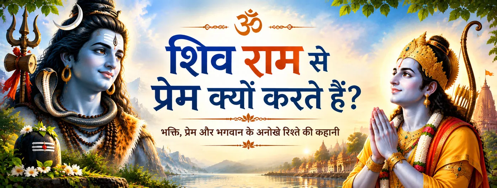

शिव राम-नाम जपते हैं
रामचरितमानस अविनाशी शिव को निरंतर राम-नाम जपते हुए वर्णित करता है। इससे राम–शिव भक्ति-संबंध के केंद्र में नाम-स्मरण स्थापित होता है।

भक्ति और प्रतीक
राम–शिव भक्ति-परंपरा में शिव का राम के प्रति प्रेम श्रद्धा, स्मरण और आनंदपूर्वक रामकथा कहने के रूप में प्रकट होता है। इसे केवल व्यक्तिगत पसंद के रूप में नहीं, बल्कि राम की महिमा को पहचानने और सम्मान देने वाली धार्मिक अभिव्यक्ति के रूप में समझाया जाता है।
रामचरितमानस इस संबंध को विशेष रूप से जीवंत बनाता है: शिव बार-बार राम-नाम का स्मरण करते हैं, रामकथा को आनंदपूर्वक सुनते हैं, राम के दिव्य स्वरूप की महिमा बताते हैं और उसी संवाद के माध्यम से राम–शिव संबंध भक्तों तक पहुँचता है।
राम-नाम
रामचरितमानस में शिव की भक्ति का सबसे स्पष्ट संकेत राम-नाम के उनके निरंतर स्मरण में दिखाई देता है।
रामचरितमानस अविनाशी शिव को निरंतर राम-नाम जपते हुए वर्णित करता है। इससे राम–शिव भक्ति-संबंध के केंद्र में नाम-स्मरण स्थापित होता है।
बालकाण्ड में शिव को काशी में राम-नाम की महिमा का उपदेश देने वाले के रूप में प्रस्तुत किया गया है। इस प्रकार परंपरा शिव के राम-स्मरण को मुक्ति की आकांक्षा रखने वाले जीवों के प्रति करुणा से जोड़ती है।
ग्रंथ शिव की नाम-महिमा को उमा के साथ उनके संवाद में रखता है। इस प्रकार उनका स्मरण केवल व्यक्तिगत साधना नहीं रहता, बल्कि भक्तिपरंपरा में आगे दिया गया पवित्र उपदेश बन जाता है।
शिव के लिए राम-नाम का स्मरण आध्यात्मिक रूप से प्रभावशाली साधना के रूप में प्रस्तुत होता है। यहाँ बल पवित्र नाम और उसके स्मरण पर है, न कि विभिन्न देव-रूपों की आराधना के बीच किसी प्रतिस्पर्धा पर।
राम का स्वरूप
रामचरितमानस शिव की भक्ति को धार्मिक आधार देता है और राम को केवल एक मानव राजकुमार से अधिक व्यापक दिव्य स्वरूप के रूप में प्रस्तुत करता है।
शिव–पार्वती संवाद में शिव राम को परमात्मा के धार्मिक स्वरूप में समझाते हैं। इसी कारण बाद की भक्ति-परंपरा शिव की राम-श्रद्धा को सामान्य प्रशंसा के बजाय दिव्य सत्य की पहचान के रूप में देखती है।
रामकथा सुनाए जाने पर शिव को अत्यंत आनंदित होकर सुनते हुए वर्णित किया गया है। रामकथा में उनका आनंद भी भक्ति का एक रूप है—श्रवण, स्मरण और पुनःकथन स्वयं भक्ति-साधना बन जाते हैं।
रामचरितमानस में शिव बार-बार राम के विषय में श्रद्धा और आनंद के साथ बोलते हैं। राम की स्तुति करना स्वयं ग्रंथ में शिव की शिक्षकीय भूमिका का हिस्सा बन जाता है।
यह भक्तिपरक दृष्टि राम और शिव की एक साथ श्रद्धा की अनुमति देती है। इसलिए उनका संबंध यह सिखाने के लिए भी प्रयुक्त होता है कि किसी एक दिव्य रूप से प्रेम करने के लिए दूसरे का निषेध आवश्यक नहीं है।
राम–शिव संबंध
इसी कारण यह संबंध भक्तिपरक दृष्टि में महत्वपूर्ण है। शिव केवल ऐसे पात्र नहीं हैं जो संयोग से राम की प्रशंसा करते हैं; वे उन महान आचार्यों में दिखाई देते हैं जिनके माध्यम से राम की महिमा भक्तों तक पहुँचती है।
Ramcharitmanas · Bala Kanda 11 · Ramcharitmanas · Shiva–Parvati dialogue · Ramcharitmanas · Bala Kanda
भक्त के लिए
यह परंपरा एक सरल भक्तिपरक संकेत देती है: जब ईश्वर के प्रति प्रेम गहरा होता है, तो स्मरण सहज बन जाता है। शिव का राम-नाम स्मरण, रामकथा का आनंदपूर्वक श्रवण और राम की स्तुति प्रेम को जीवंत भक्ति-साधना में बदल देते हैं।
भक्तों के सामान्य प्रश्न
रामचरितमानस राम-नाम को आध्यात्मिक रूप से प्रभावशाली बताता है और शिव को उसका निरंतर जप करने वाला वर्णित करता है। भक्तिपरंपरा में यह राम के प्रति शिव की श्रद्धा और नाम की पवित्र शक्ति को व्यक्त करता है।
रामचरितमानस में शिव राम को धार्मिक-दार्शनिक भाषा में परमात्मा के रूप में समझाते हैं। यह उस ग्रंथ की भक्तिपरक धार्मिक दृष्टि का हिस्सा है और इसे अलग-अलग रामायण स्रोतों की प्रस्तुति से अलग पहचानना चाहिए।
स्मरण, स्तुति, रामकथा को आनंदपूर्वक सुनने और राम के स्वरूप का उपदेश देने के माध्यम से। रामचरितमानस में यही भक्तिपरक अभिव्यक्तियाँ विशेष रूप से दिखाई देती हैं।
नहीं। राम–शिव भक्ति-परंपरा में उनके पारस्परिक सम्मान के माध्यम से अक्सर बिना प्रतिस्पर्धा वाली भक्ति का संदेश दिया जाता है। इस समावेशी भक्तिदृष्टि के लिए रामचरितमानस विशेष रूप से महत्वपूर्ण है।